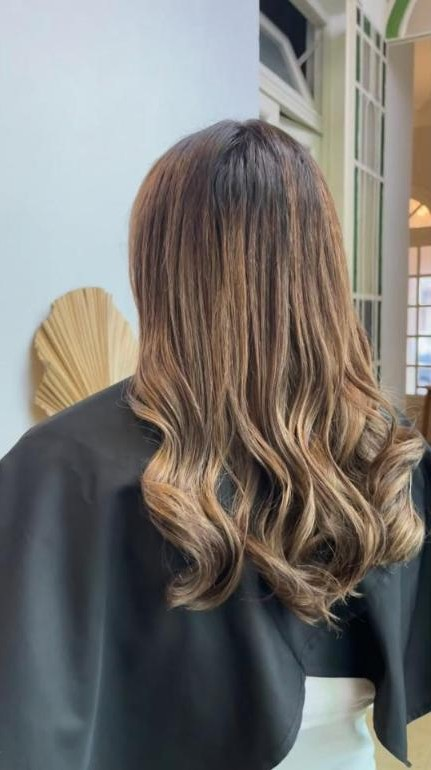
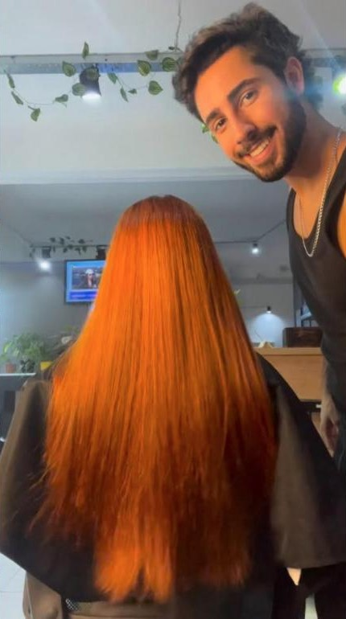
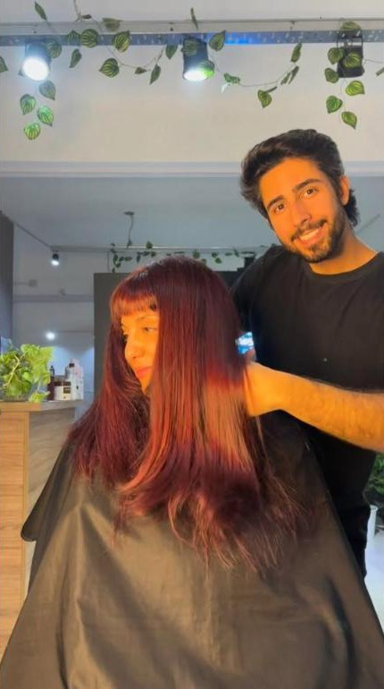
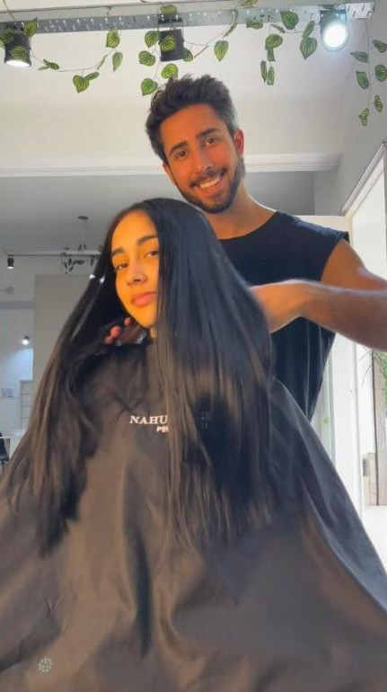
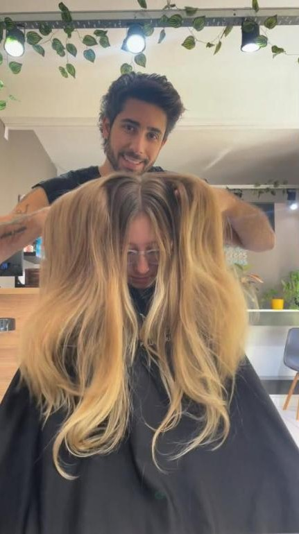
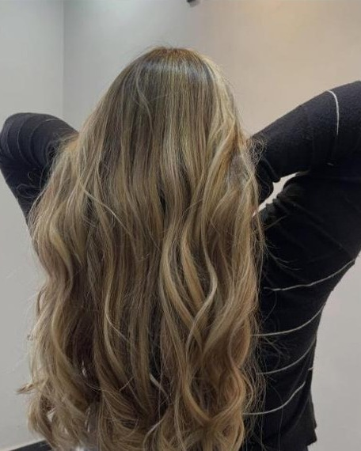
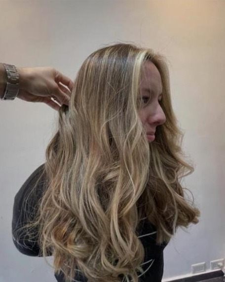
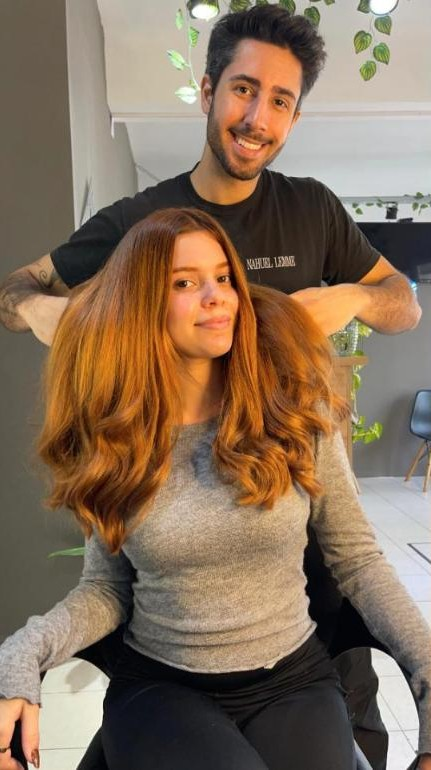

Color
Balayage
Luz pintada a mano alzada, pensada según tu rostro, tu piel y tu estilo.
ChivilcoyPedir turno
Peluquería · Chivilcoy
Balayage, mechas y correcciones de color. Contame qué querés cambiar y lo vemos juntos.
Turnos por WhatsApp, en Chivilcoy.

La promesa de la casa
A veces la clave está en aportar profundidad, dimensión y luz en los lugares correctos.
Servicios
Elegí por dónde querés empezar. El resto lo terminamos de definir en el sillón.
Color
Luz pintada a mano alzada, pensada según tu rostro, tu piel y tu estilo.
Color
Profundidad, dimensión y luz en los lugares correctos.
Color
Cuando el color se apagó o no salió como esperabas, lo llevamos a donde tiene que estar.
Corte
Un corte estratégico que elimina volumen y deja movimiento.
Peinado
De rulos a lacio, solo con corte y técnica de peinado.
Primera vez
Contame cómo está tu pelo hoy y a dónde querés llegar. Lo vemos juntos.
De oscuro a claro. Si no sabés cuál te va, lo elegimos según tu piel.
Trabajos
Cambios que salieron del salón de Chivilcoy.







Quién te atiende
Soy colorista. Hago balayage, mechas y correcciones de color, y atiendo en Chivilcoy.
“Acá no juzgamos, solo escuchamos.”
Dónde
El día y el horario los coordinamos al pedir el turno.
Provincia de Buenos Aires. Turnos por WhatsApp.